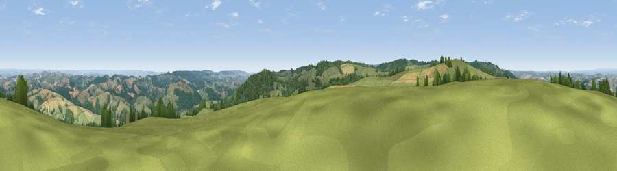

Viewpoint near Bridford
#4307 in England · top 6% of its area beats it · near Bridford · path 97 mWhere it is
The exact computed spot (SX 81375 87050). Click the marker for map links.
Public access: the nearest public right of way is about 97 m away — the final stretch may cross private land. Computed from Natural England's CRoW access layer and OpenStreetMap rights of way — not the legal definitive map. Always verify locally.
The view, rendered

A 360° render of this exact spot computed from the terrain model, tree cover and land cover — summer colours, afternoon light, calibrated against photographs of famous viewpoints. Real trees, hedges and buildings will differ in detail.
The panorama
Grey silhouette: terrain skyline in each direction (720 bearings, Earth curvature and refraction included). Dashed green: skyline with trees (+15 m) and buildings (+8 m) as obstacles. Blue strip: how far the ground is visible on each bearing.
Where the view opens
Wedge length = distance to the farthest visible ground on that bearing (vegetation-aware). Rings at 10, 25 and 50 km.
What fills the view
62% grassland · 27% woodland · 11% cropland
Angular shares of the visible panorama (visual magnitude), not map area. Landscape diversity 0.40 (0–1 Shannon).
Key numbers
More beautiful places nearby
The staircase of upgrades: each row has a higher view potential than everything closer. Driving times are estimates from straight-line distance, calibrated against real road routing — check an actual route before setting out.
| Place | Direction | Drive | Score |
|---|---|---|---|
| Viewpoint near Bridford | W · 1 km | ~3 min | 74.0 |
| Viewpoint near Moretonhampstead | WNW · 4 km | ~9 min | 76.3 |
| Viewpoint near Doddiscombsleigh | E · 6 km | ~13 min | 78.4 |
| Viewpoint near Whitestone | NNE · 9 km | ~18 min | 79.8 |
| Viewpoint near Haytor Vale | SSW · 10 km | ~19 min | 80.1 |
| Viewpoint near Kenton | ESE · 13 km | ~23 min | 80.7 |
| Viewpoint near Kenton | ESE · 13 km | ~24 min | 82.9 |
| Viewpoint near Holcombe | SE · 17 km | ~30 min | 83.3 |
50.67099, -3.68006 · source: screening · position refined by local search. Computed location — check access rights before visiting.